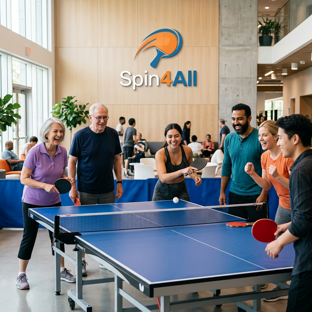
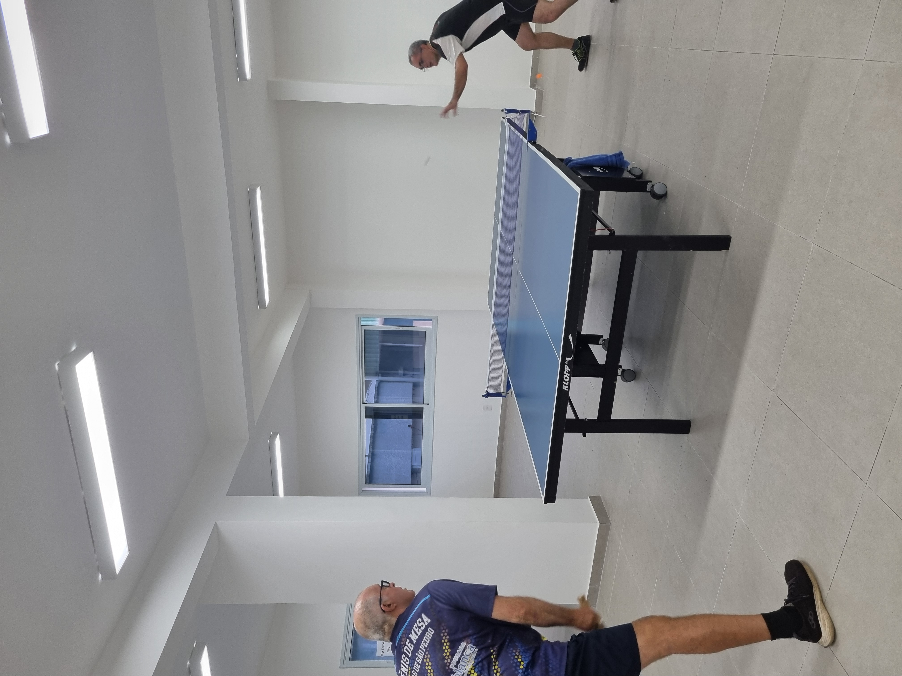
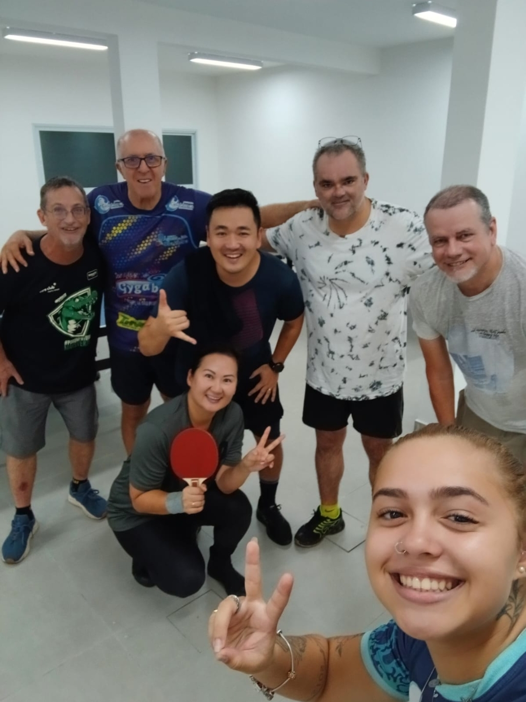
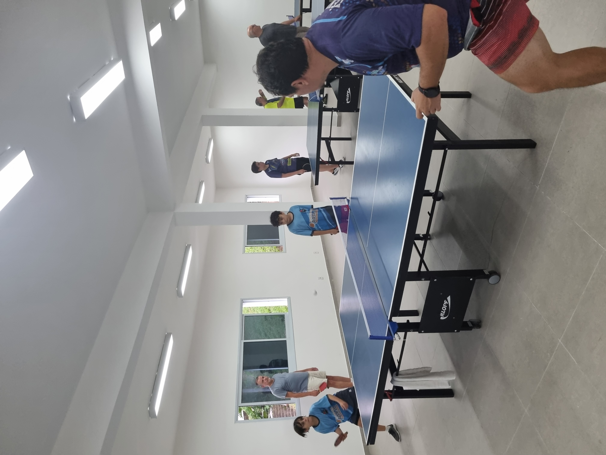
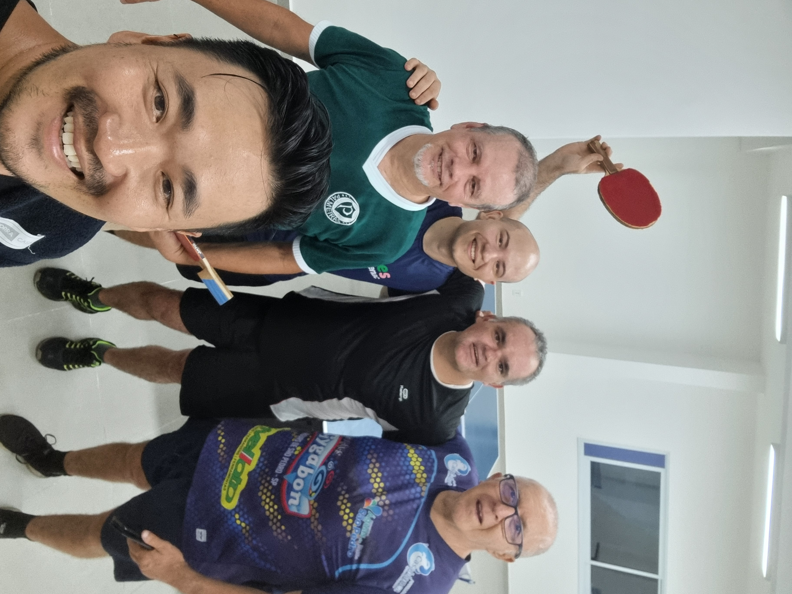
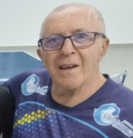

Spin4All
Comunidade de Tênis de Mesa para Todos
Um grupo apaixonado por tênis de mesa que promove inclusão, saúde e integração social em Águas de São Pedro.
Um grupo apaixonado por tênis de mesa que promove inclusão, saúde e integração social em Águas de São Pedro.

Muitas pessoas acreditam que nunca conseguirão jogar ou que o esporte é difícil demais. Nossa missão é quebrar essa barreira e mostrar que qualquer pessoa pode aprender e se divertir jogando.
Aqui acreditamos que o esporte pode transformar vidas, melhorar a saúde e conectar pessoas.
O esporte melhora o condicionamento físico, reduz o estresse e promove bem-estar.
Qualquer pessoa pode jogar, independente de idade, sexo ou experiência.
Somos um grupo apaixonado pelo esporte que aprende e evolui junto.
* Os horários podem sofrer alterações. Acompanhe nosso grupo no WhatsApp para confirmação.
Fundamentos, aprendizado e fixação dos golpes.
Evolução dos golpes e introdução às técnicas de jogo.
Dinâmica de jogo mais intensa, técnicas de saque e movimentação.




Clique nas fotos para ampliar.
Acompanhe fotos, vídeos e momentos da comunidade Spin4All no Instagram.
Seguir no Instagram"Nunca tinha jogado tênis de mesa antes e me senti super acolhido. Ótimo para a saúde!"
- Aluno Iniciante"Excelente comunidade de ping pong em Águas de São Pedro. Os treinos são muito dinâmicos."
- Jogador Intermediário"Nunca imaginei que pudesse ser tão facil aprender. Aprendi o basico em menos de 1 hora!"
- Aluno Curioso"Não sabia que poderia melhorar meu jogo em tão pouco tempo. Obrigado timee!"
- Aluno IntermediárioCriar uma ponte entre o esporte e a sociedade para democratizar o tênis de mesa para todas as idades e condições socioeconômicas.
Criar um ambiente acolhedor que inspire pessoas a descobrir o prazer de jogar.
Se você procura onde jogar tênis de mesa em Águas de São Pedro, o Spin4All é uma comunidade aberta que reúne jogadores iniciantes e experientes.
Nosso grupo promove treinos semanais, integração social e aprendizado do esporte.
Qualquer pessoa pode participar, mesmo sem experiência.
Conheça as pessoas que estão prontas para te receber e ajudar nos treinos.



Qualquer dúvida ao chegar, procure por um de nós!
Não! A Spin4All é uma iniciativa comunitária e nosso foco é democratizar o acesso ao esporte que tanto amamos!
Como não temos Professores que possam instruir crianças que estão começando do zero, recomendamos o excelente projeto de iniciação da Secretaria de Esportes no SESI da cidade.
Existem crianças no nível intermediário/avançado que conseguem evoluir e acompanhar o nível dos adultos e receberam liberação dos pais e da Secretaria de Esportes para jogar junto com os adultos. Para maiores duvidas, entre em contato com a Secretaria de Esportes.
Nenhum. Temos membros de 10 a 70 anos. O esporte é de baixo impacto e ótimo para a saúde mental e física em qualquer fase da vida.
Traga a sua se tiver, mas não é obrigatório. Se for sua primeira vez, tem que ver se no dia tem alguém com raquete disponível para emprestar. Depois, se tiver interesse, podemos te orientar na compra da sua própria.
Temos membros mais experientes que atuam como mentores, ajudando os iniciantes com as técnicas básicas de empunhadura e rebatida para que todos evoluam juntos.
Sim! Adoramos receber novos rostos. Basta trazer seu amigo em um dos horários de treino e a comunidade cuidará do resto.
Não existe uniforme. Recomendamos roupas leves (esportivas) e obrigatoriamente tênis confortável com solado de borracha para sua segurança.
Atendemos a ambos! Temos momentos de "jogo livre" para diversão e também treinos técnicos para quem deseja evoluir e participar de torneios regionais.
Sim! Realizamos regularmente festivais e torneios amistosos para integrar os membros e colocar em prática o que aprendemos nos treinos.
O tênis de mesa é muito adaptável. Recomendamos falar com seu médico, mas muitos membros usam o esporte como exercício de baixo impacto e integração social.
A evolução é natural. Conforme você ganha técnica nos treinos de iniciantes, nossos coordenadores e veteranos te convidarão para os horários de nível intermediário.
É o nosso canal oficial! Usamos para avisos em tempo real, dicas técnicas, vídeos de inspiração e para organizar os encontros da comunidade.
Com certeza! Doações de mesas, redes ou raquetes nos ajudam a levar o projeto para mais locais e beneficiar mais pessoas.
Não se preocupe! Ensinamos as regras básicas (saque, contagem de pontos, etc.) na prática, enquanto você joga suas primeiras partidas.
Geralmente sim! Tentamos manter a regularidade o ano todo. Qualquer pausa para manutenção ou feriados é avisada com antecedência no WhatsApp.
Divulgando nossos treinos, sendo um membro acolhedor com os novatos e participando ativamente das atividades e eventos que organizamos!
Traga sua curiosidade e vontade de aprender.
Não importa seu
nível.
A comunidade de tênis de mesa Spin4All está aberta para você.